2016年北京市中考化学真题 原卷解析
可能用到的相对原子质量
H 1 C 12 O 16 Na 23 S 32 Cl 35.5 K 39 Mn 55 Zn 65 Ba 137
第一部分 选择题（共20分）
（每小题只有1个选项符合题意。每小题1分）
1．通过实验测定了空气组成的科学家是
【答案】C
【解析】
试题分析：通过实验测定了空气组成的科学家是拉瓦锡，故答案选择C
考点：空气成分的测定
2．下列属于纯净物的是
A．五氧化二磷B．大理石C．加碘食盐D．食醋
【答案】A
 考点：物质的分类
考点：物质的分类
3．下列元素中，人体摄入量过低会引起贫血的是
A．FeB．ZnC．NaD．Ca
【答案】A
【解析】
试题分析：人体摄入量过低会引起贫血的是铁元素，故答案选择A
考点：化学元素与人体健康
4．下列金属中，不能从CuSO4溶液中置换出Cu的是
A．ZnB．AlC．AgD．Fe
【答案】C
 考点：金属活动性顺序[来源:Zxxk.Com]
考点：金属活动性顺序[来源:Zxxk.Com]
5．铜能被加工成厚度仅为7微米的超博铜箔，说明铜具有良好的
A．导电性B．延展性C．导热性D．抗腐蚀性
【答案】B
【解析】
试题分析：铜能被加工成厚度仅为7微米的超博铜箔，说明铜具有良 好的延展性，故答案选择B
好的延展性，故答案选择B
考点：金属的性质
6．下列安全标志中，表示“禁止燃放鞭炮”的是
【答案】B
【解析】
试题分析：A选项禁止吸烟标志；B选项为禁止燃放烟花爆竹标志；C选项为禁止火种的标志；D选项为禁止放置易燃物标志；故答案选择B
考点：安全标志
7．一些物质的pH范围如下，其中呈碱性的是
A．柠檬汁（2～3）B．橘子汁（3～4）
C．西瓜汁（5～6）D．牙膏（8～9）
【答案】D
【解析】
试题分析：溶液的酸碱性，用PH表示时，PH大于7显碱性，小于7溶液显酸性，等于7溶液显中性；故答案选择D
考点：溶液的酸碱性
8．2016年世界杯环境日，我国提出了“改善环境质量，推动绿色发展”的主题，下列做法不符合这一主题的是
A．尽量选择公共交通工具出行B．自带布袋购物
C．废酸液直接排入下水道D．减少使用一次性餐具
【答案】C
【解析】
试题分析：A．尽量选择公共交通工具出行，减少污染物的排放符合主题；B．自带布袋购物，减少塑料垃圾的产生，符合主题；C．废酸液直接排入下水道，会造成水污染，不符合改善环境质量，推动绿色和发展主题； D．减少使用一次性餐具，减少木材的使用，保护树木，符合主题；故答案选择C
考点：化学与环境
9．下列符号中，表示2个氯原子的是
A．Cl2B．2Cl2C．2ClD．2Cl-
【答案】C
 考点：化学符号的含义
考点：化学符号的含义
10．下列实验操作正确的是

| 
| 
| 
|
A．稀释浓硫酸 | B．加热液体 | C．点燃酒精灯 | D．称量NaOH固体 |
【答案】A
【解析】
试题分析：A选项稀释浓硫酸酸入水且搅拌，是正确的操作；B选项加热试管中的液体时，试管中的液体不能超过其体积的三分之一；C选项点燃酒精灯要用火柴；D选项称量氢氧化钠腐蚀性的药品，要在托盘天平的两边放相同的玻璃仪器；故答案选择A
考点：基本操作
11． 镍在元素周期表中的信息如下图所示，下列有关镍元素的说法不正确的是
A．原子序数是28B．属于金属元素
C．原子中的质子数是28D．相对原子质量为58.69g
【答案】D
【解析】
试题分析：根据元素周期表提供的信息可知，A选项原子序数为28，是正确都喜欢苏；B选项属于金属元素，有汉字的书写可知，是正确的叙述；C选项原子中的质子数为28，根据在原子中质子数=原子序数知，是正确的叙述；D选项相对原子质量为58.69g，应该为相对原子质量为58.69；故答案选择D
考点：元素周期表提供的信息
12．下列物质的用途中，利用其物理性质的是
A．氧气用于炼钢 B．硫酸用于除铁锈
C．干冰用作制冷剂D．碳酸氢钠用于治疗胃酸过多症
【答案】C
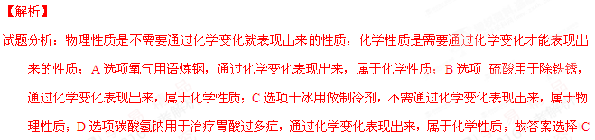
考点：物质的性质13．下列关于S+O2燃点SO2的理解不正确的是
A．表示硫与氧气在点燃条件下反应生成二氧化硫
B．参 加反应的硫与氧气的质量比是2:1
加反应的硫与氧气的质量比是2:1
C．反应前后硫原子、氧原子的个数均不变
D．参加反应的氧气与生成的二氧化硫的分子个数比为1:1
【答案】B
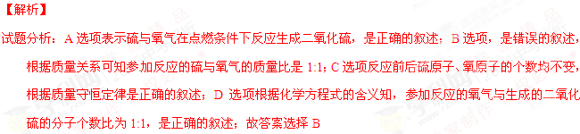
考点：化学方程式的含义14． 海水提镁的反应之一：MgCl2+Ca(OH)2=CaCl2+Mg(OH)2↓，该反应属于
A．化和反应B．复分解反应C．置换反应D．分解反应
【答案】B
【解析】
试题分析：因为该反应是两种化合物相互交换成分，得到两种新的化合物的反应，故该反应属于复分解反应，答案选择B
考点：化学反应的分类
15．某同学制作的试剂标签如下，其中化学式书写不正确的是
【答案】B
【解析】
试题分析：A选项硝酸铜的化学式是正确的表示；B选项是错误的表示，氯化铁的化学表示为FeCl3；C选项氢氧化钾的化学式是正确的表示；D选项氧化铝的化学式是正确的表示，故答案选择B
考点：化学式的书写
16．下列实验操作能达到实验目的的是
选项 | 实验目的 | 实验操作 |
A | 除去CO2中少量的CO | 点燃 |
B | 除去CuSO4溶液中的少量FeSO4 | 加入足量的铜粉 |
C | 鉴别澄清石灰水和NaOH溶液 | 加入稀盐酸 |
D | 鉴别硬水和软水 | 加入肥皂水 |
【答案】D
【解析】
试题分析：A选项不能达到目的，因为在二氧化碳的环境下一氧化碳不能燃烧；B选项不能达到目的，因为金属铜不能置换出金属铁，而除去杂质；C选项是错误的叙述，鉴别澄清石灰水和氢氧化钠溶液，二者均能与稀盐酸反应；D选项能达到实验目的；故答案选择D
考点：实验方案评价
17．下列关于空气的说法正确的是[来源:学科网ZXXK]
A．空气由空气分子构成B．N2、O2等均匀混合
C．N2、O2不再保持各自的化学性质D．N2、O2的体积比约为5:1
【答案】B
考点：空气
18．甲、乙的溶解度曲线如图所示。下列有关说法不正确的是
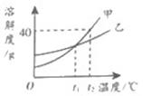
A．t2℃时，甲的饱和溶液中溶质和溶剂的质量之比为2:5
B．乙的饱和溶液从t2℃降温到t1℃，溶液仍饱和
C．t1℃时，甲、乙两种饱和溶液中溶质的质量相等
D．甲、乙的饱和溶液分别从t2℃降温到t1℃，两溶液中溶质质量分数相等
【答案】C
【解析】
试题分析：A选项因为t2℃时，甲物质的溶解度为40g，故甲的饱和溶液中溶质和溶剂的质量之比为2:5，是正确的叙述；B选项因为乙物质的溶解度随温度的升高而增加，故降低温度有晶体析出，仍为饱和溶液是正确的叙述；C选项是错误的叙述，虽然溶解度的数值相等，但溶液的质量不一定相等，溶质的质量不一定相等；D选项甲、乙的饱和溶液分别从t2℃降温到t1℃，两溶液中溶质质量分数相等，是正确的叙述，在该温度下溶解度相等且降温的过程中均析出晶体，得到该温度下的饱和溶液；故答案选择C
考点：溶解度曲线
19．某外控型食品保鲜剂以淀粉、二氧化硅（SiO2）为载体，吸附酒精制作而成。保鲜原理是酒精缓慢挥发，在食品周围形成一定浓度的气体保护层。下列说法不正确的是
A．SiO2中的Si的化合价为+4B．起保鲜作用的物质是酒精
C．该保鲜剂不能与明火接触D．酒精挥发时分子体积变大
【答案】D
考点：食品保鲜剂
20．下列4个图像中，能正确反应变化关系的是
| 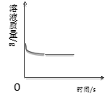 | | 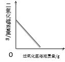 |
A．向一定质量的氢氧化钠溶液中加入稀硫酸至过量 | B．向一定质量的稀硫酸中加入锌片 | C．加热一定质量的高锰酸钾固体 | D．向一定质量的二氧化锰中加入过氧化氢溶液 |
【答案】A
【解析】
试题分析：A选项向一定质量的氢氧化钠溶液中加入稀硫酸至过量，硫酸钠的质量逐渐增加到最大，然后不变，是正确的表示；B选项是错误的表示，向一定质量的稀硫酸中加入锌片，溶液的质量逐渐增大到最大值；C选项是错误的表示，加热一定质量的高锰酸钾固体，固体中锰元素的质量分数逐渐增大，因为生成氧气，固体质量减小；D选项是错误的表示，因为二氧化锰是催化剂，反应前后质量不变；故答案选择A学科网
考点：图像题
第二部分 非选择题（共60分）
【生活现象解释】
材料构筑了我们的世界。请回答21~22题。
21．（2分）汉代海昏侯国遗址考古发掘出大量珍贵文物。
（1）下图是首都博物馆展出的3件文物，其中由金属材料制成的是 （填序号）。
A．金饼 B．“大刘记印”玉印 C．青铜雁鱼灯
（2）出土的铁质编磬锈蚀严重，金饼却依然金光灿灿，从物质性质的角度解释其原因： 。
【答案】（1）A、C（2）金的化学性质不活泼，常温下不易和其他物质反应，铁的活动性强于金
考点：金属材料
22．（2分）请从22-A或22-B两题中任选1个作答，若两题均作答，按22-A计分。
22-A | 22-B |
“洗衣凝珠”是由一层薄膜包裹洗衣液制成的新型洗涤产品。该产品的主要化学成分是可溶于水的聚乙烯醇（PVA）塑料。 （1）PVA塑料属于 （填“合金”或“有机合成材料”）。 （2）醋酸（CH3COOH）是合成PVA的原料之一。醋酸中碳元素的质量分数为40%，其计算式为 。 | 纳米材料具有特殊的性质和功能。纳米四氧化三铁具有类似人工模拟酶的催化性能。 （1）四氧化三铁属于 （填“无机物”或“有机物”）。 （2）纳米四氧化三铁能将过氧化氢催化分解为水和氧气，该反应的化学方程式为 。 |
【答案】A （1）有机合成材料 （2）（12×2）/（12×2+1×4+16×2）×100%； B （2）无机物 （2）2H2O2 (纳米四氧化三铁)
2H2O+O2↑
【解析】
试题分析：A中产品成分为可溶性聚乙烯醇故（1）PVA塑料属于有机合成材料；（2）醋酸中碳元素的质量分数为40%，其计算式为（12×2）/（12×2+1×4+16×2）×100%；B相中，（1）四氧化三铁属于无机物；（2）纳米四氧化三铁能将过氧化氢催化分解为水和氧气，该反应的化学方程式为2H2O2 (纳米四氧化三铁)
2H2O+O2↑。[来源:学。科。网]
考点：材料的分类、元素的质量分数
水是一种生活中不可缺少的物质。请回答23~25题。
23．（1分）水在通电条件下会分解，反应的化学方程式为 。
【答案】2H2O通电2H2↑+O2↑
【解析】
试题分析：水在通电条件下会分解，反应的化学方程式为2H2O通电2H2↑+O2↑。
考点：化学方程式的书写
24．（1分）市售“自热米饭”的自加热原理：饭盒夹层中的水与生石灰接触，反应放出大量热。该反应的化学方程式为 。
【答案】CaO+H2O=Ca(OH)2
【解析】
试题分析：水与生石灰接触，反应放出大量热。该反应的化学方程式为CaO+H2O=Ca(OH)2
考点：化学方程式的书写
25．（1分）10%的CaCl2溶液可用作路面保湿剂。欲配置100kg该路面保湿剂，需要水的质量是 kg。
【答案】90kg
考点：溶液
能源利用与社会可持续发展密切相关。请回答26~27题。
26．（2分）目前使用的燃料大多数来自化石燃料。
（1）化石燃料包括天然气、煤、 。
（2）天然气的主要成分是甲烷，甲烷燃烧的化学方程式为 。
【答案】（1）石油（2）CH4+2O2燃点CO2+2H2O
考点：化石燃料及其燃烧
27．（2分）我国对海洋温差发电技术的研究位于世界前列，其工作原理示意图如下：
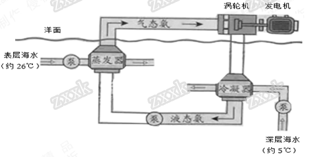
（1）在上述过程中，氨发生的变化属于 （填“物理变化”或“化学变化”）。
（2）与燃煤发电相比，海洋温差发电的优点是 （写出一点即可）。
【答案】（1）物理变化（2）环保，不排放二氧化碳（其他优点也可以）[来源:学。科。网Z。X。X。K]
【解析】
试题分析：（1）氨气在上述过程中，只是发生了状态的改变，没有新物质生成，故氨发生的变化属于物理变化；（2）与燃煤发电相比，海洋温差发电的优点是环保，不排放二氧化碳及其其它污染物。
考点：能源的合理利用
科学实践活动为同学们创设了独立思考和实践的机会。请回答28~29题。
28．（3分）小明用面粉、鸡蛋、牛奶、白糖、橄榄油等原料制作蛋糕。
（1）上述原料中，富含糖类的是 。
（2）下列量杯中，最适合量取80mL牛奶的是 （填序号）。
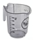 | 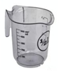 | 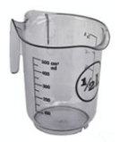 |
A．10mL量杯 | B．100mL量杯 | C．500mL量杯 |
（3）蛋糕散发出阵阵香味，说明分子具有的性质是 。
【答案】（1）面粉、白糖（2）B（3）分子在不停运动
考点：微粒的特征、营养素
29．（3分）小明用蜡烛进行了下列活动。
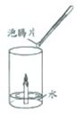
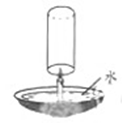
活动1 活动2 活动3
（1）活动1：点燃蜡烛后，电子称示数逐渐减小。蜡烛减小的质量 （填“大于”“等于”或“小于”）燃烧后生成物的总质量。
（2）活动2：加入泡腾片（主要成分含柠檬酸、碳酸氢钠等），观察到水中产生大量气泡，蜡烛逐渐熄灭。产生上述现象的原因是 。
（3）活动3：用玻璃杯迅速扣住燃烧的蜡烛，并使杯口始终浸没在水中。下列说法正确的是 （填序号）。
A．可观察到蜡烛熄灭B．最终杯中液面高于碗中液面C．该方法能准确测定空气中氧气的含量
【答案】（1）小于（2）柠檬酸和碳酸氢钠生成的CO2比空气密度大而将空气挤走，导致蜡烛周围没有O2（隔绝O2）（3）A、B
【解析】
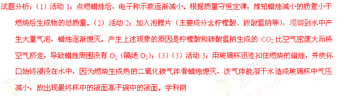
考点：蜡烛的燃烧、燃烧与灭火【科普阅读理解】
30．（5分）阅读下面科普短文（原文作者：渊琳、孙小凡等，原文有删改）。
方便面是很受欢迎的速食品，关于它的传闻有很多。
传闻1：方便面含盐超标
某方便面的营养成分 |
项目 每100g |
能量 2013kJ[ 蛋白质 9.9g 脂肪 24.4g 碳水化合物 55.4g 钠 2054mg |
我们知道，常人每天摄入食盐量不宜超过6g，长期过多摄入可能引发高血压、胃溃疡等疾病。经检测，每包方便面评价含食盐约3g。
传闻2：方便面的面饼五分之一以上都是油
专家建议常人每天摄入油量不宜超过25g，长期高油脂摄入会导致高脂血症等疾病。研究人员将90g油炸型方便面面饼研碎，在加热条件下，用乙醚（C2H5OC2H5）作溶剂浸泡、提取、分离，得到的油约20g。
传闻3：吃方便面胃里面会形成一层蜡模
有传闻称碗装方便面的面碗内有一层蜡，会随食物进入人体产生危害。事实上，面碗内的耐热防水材料是聚苯乙烯，不是蜡。泡面时，聚苯乙烯的释放量远低于每天每千克体重0.04mg的安全摄入量。
传闻4：吃一包方便面要解毒32天
人们担心面饼中食品添加剂BHT（油脂抗氧化剂）危害健康。BHT每天的最大可摄入量为每千克体重0.3mg。我国相关标准规定，食品中每千克油脂中BHT的添加量不超过0.2g。因此，就算每天吃5包方便面，摄入的BHT也不会超标。
传闻5：面饼不会变质
事实上，面饼中的油会发生酸败而变质，产生“哈喇味”。过氧化物是酸败过程的一种中间产物，会加速面饼的变质。下图是不同条件下，某品牌方便面中过氧化值（与过氧化物含量成正比）的测定结果。

用不同品牌的方便面进行测定，变化规律类似。
看完上面关于传闻的解读，相信你对如何健康食用方便面已有心得。
依据文章内容回答下列问题。
（1）常人每天摄入食盐量不宜超过 g。
（2）测定面饼中油含量的操作包括 （填序号，下同）。
A．将面饼研碎 B．用乙醚浸泡 C．加热
（3）判断传闻3的真假并说明理由： 。
（4）方便面不开袋时，影响其过氧化值的因素有 。
（5）下列关于方便面的说法正确的是 。
A．不能添加食品添加剂 B．食用时，调料包应酌量添加
C．包装袋破损会缩短保质期 D．食用时，尽量搭配蔬菜
【答案】（1）6g （2）A、B、C （3）假的，因为面碗内的耐热防水材料是聚苯乙烯，不是蜡。（4）保存温度、保存时间长度（5）C
【解析】
试题分析：根据题中的信息可知，（1）常人每天摄入食盐量不宜超过6g；（2）测定面饼中油含量的操作包括A．将面饼研碎；B．用乙醚浸泡 ；C．加热。（3）传闻3为假的，因为面碗内的耐热防水材料是聚苯乙烯，不是蜡；（4）方便面不开袋时，影响其过氧化值的因素有保存温度、保存时间长度；（5）关于方便面的说法正确的是C．包装袋破损会缩短保质期。学科网
考点：科普知识
【生产实际分析】
31．（3分）烟道气中含有大量CO2，经“捕捉”可用于生产尿素、甲醇等产品。
（1）尿素[CO(NH2)2]属于化学肥料中的 肥。
（2）生产甲醇(CH3OH)。
①“捕捉”CO2：在高压时将烟道气中的CO2溶解于甲醇，得到CO2的甲醇溶液。所得溶液中溶质是 。
②用“捕捉”CO2生产甲醇，反应的微观示意图如下：
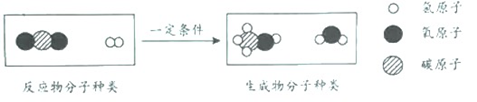
该反应的化学方程式为 。
【答案】（1）氮（2）CO2 CO2+3H2
=CH3OH+H2O
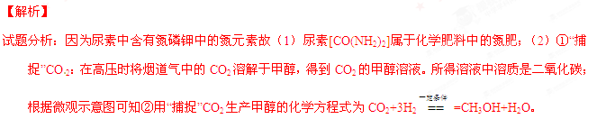
考点：化学肥料、化学反应的微观示意图32．（4分）工业上用闪锌矿（主要成分是ZnS、FeS）冶炼锌，主要流程如下：
（1）焙烧炉中，ZnS转化为ZnO。补全该反应的化学方程式。
□ZnS+□ 高温□Zn+□SO2
（2）酸浸槽中，硫酸与锌焙砂反应得到用于电解的酸浸液。反应过程中需不断搅拌，其目的是 。
（3）酸浸渣的主要成分是铁酸锌（ZnFe2O4，其中Fe为+3价）。底吹炉中，主要发生如下反应：
① 3ZnFe2O4+C高温2Fe3O4+3ZnO+CO↑ ② ZnFe2O4+CO高温2FeO+ZnO+CO2
③ ZnO+CO高温Zn（蒸气）+ CO2]
反应①~③中，化合价发生改变的元素有 。
（4）最终可以获得锌的设备有 。
【答案】（1）2ZnS+3O2高温2ZnO+2SO2（2）硫酸与锌焙砂充分接触，提高反应转化率（3）C、Fe、Zn
（4）电解槽、底吹炉
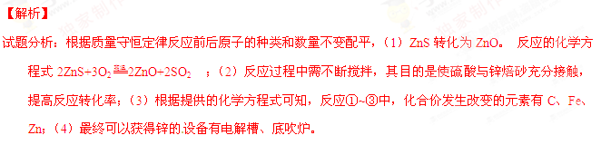
考点：工艺流程图【物质组成和变化分析】
33．（5分）走进“化学村”。 “化学村”的布局如下：
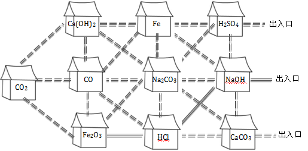
（1）认识“居民”。
①10户“居民”中，俗称熟石灰的是 ，属于氧化物的有 。
②“居民”CO与Fe2O3反应的化学方程式为 。
③盐酸有5户相邻的“居民”：Fe2O3、CO、Na2CO3、NaHO、CaCO3，其中不能与它发生反应的是 。
（2）认识“村中的路”。只有相邻且能相互反应的“居民”间才是通路。例如，上图中涂成黑色实线的是一条从“Fe2O3家”到达出入口的路。请你在图中涂出一条从“CO2家”到达任一出入口的路。
【答案】（1）①Ca(OH)2 CO2、CO、Fe2O3 ② Fe2O3+ 3CO2Fe+ 3CO2③CO（2）CO2->Ca(OH)2->Na2CO3->H2SO4->出入口
【解析】
试题分析：（1）氢氧化钙俗名为熟石灰，氧化物是两种元素组成且一种是氧元素的化合物，故，属于氧化物的为二氧化碳、一氧化碳、氧化铁；②“居民”CO与Fe2O3反应的化学方程式为Fe2O3+ 3CO2Fe+ 3CO；根据酸的性质可知，③盐酸有5户相邻的“居民”：Fe2O3、CO、Na2CO3、NaHO、CaCO3，其中不能与它发生反应的是一氧化碳；（2）根据二氧化碳的性质可知，二氧化碳与碱氢氧化钙反应，碱氢氧化钙能与盐碳酸钠反应，碳酸钠能与硫酸反应，到出口。
考点：酸碱盐的性质及转化
【基本实验】
34．（4分）实验室用高锰酸钾制取氧气，并验证氧气的化学性质。
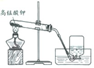
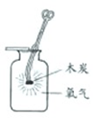
实验1 实验2
（1）实验1中反应的化学方程式为 ；氧气可用排水法收集的原因是 。
（2）实验2中观察到的现象是 ，该反应的化学方程式为 。
【答案】（1）2KMnO4△ K2MnO4+MnO2+O2↑ 氧气不易溶于水、不与水反应 （2）带有火星的木炭复燃、发出白光、放出热量 C+O2点燃CO2
考点：氧气的制取及性质
35．（4分）去除粗盐中的泥沙。
（1）实验的主要步骤依次是 、过滤、 。
（2）制作过滤器的过程如下图所示，其正确操作顺序为 （填序号）。
（3）举出一个生活中应用过滤原理的实例： 。
【答案】（1）溶解、过滤、蒸发结晶（2）③①②（3）自来水生成环节中的过滤池就是使用了过滤原理（其他也可）
考点：粗盐提纯、过滤操作
36．（2分）元旦联欢会上，雯雯拿出一幅画（如下图所示），表演了一个化学魔术。
（1）她向画中的衣服上喷了一种无色溶液，衣服由紫色变成红色。若衣服上预先涂过石蕊溶液，则喷的无色溶液可能是 。
（2）她向画中的灯笼上喷了另一种无色溶液，灯笼由白色变成红色，则该无色溶液及灯笼上预先涂过的试剂分别是 。
【答案】（1）HCl（无色的酸性溶液都可以）（2）NaOH溶液、无色酚酞试液（其他合理答案也可）
【解析】
试题分析：（1）根据衣服上喷了一种无色溶液，衣服由紫色变成红色。若衣服上预先涂过石蕊溶液，则喷的无色溶液可能是无色酸性溶液；（2）灯笼上喷了另一种无色溶液，灯笼由白色变成红色，则该无色溶液为无色碱性溶液如氢氧化钠溶液等，灯笼上预先涂过的试剂 是酚酞试液。
考点：酸碱的性质
37．（2分）为了研究物质的溶解现象，设计并进行了如下实验。
实验 | 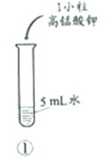 | 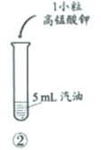 | 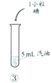 |
现象 | 固体溶解，形成紫色溶液 | 固体几乎不溶解 | 固体溶解，形成紫红色溶液 |
（1）对比实验①、②的现象，可得出的结论是 。
（2）设计实验②、③的目的是 。
【答案】（1）同种溶质在不同溶剂中的溶解特性不同（2）不同溶质在同一种溶剂中的溶解特性不同
考点：物质的溶解现象的影响因素
【实验原理分析】
38．（4分）利用表中装置进行下列实验。已知：白磷的着火点为40℃。
实验装置 | 实验1 | 实验2 |
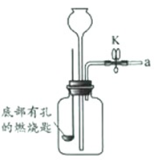 | I．将盛有足量锌粒的燃烧匙伸入瓶中，塞紧瓶塞 II．打开K，从长颈漏斗向瓶内加入稀盐酸，至浸没锌粒 III．当瓶中产生大量气泡时，关闭K | I．将盛有白磷的燃烧匙伸入瓶内，塞紧瓶塞 II．打开K，从长今漏斗向瓶内加入约80℃的热水，至浸没白磷 III．从a口向瓶中鼓入空气，使瓶中液面低于燃烧匙底部，关闭K |
（1）连接仪器后，关闭K，加水至长颈漏斗内液面高于瓶中液面。一段时间后，液面高度保持不变，该现象说明 。
（2）实验Ⅰ中，瓶内发生反应的化学方程式为 ；步骤Ⅲ中，关闭K后的现象是 。
（3）实验2中，仅对比步骤Ⅱ和Ⅲ可知，欲探究的燃烧条件是 。
【答案】（1）装置的气密性好（2）Zn+2HCl=ZnCl2+H2↑ 瓶内液面逐步缓慢下降，长颈漏斗中的液面上升，反应会因为瓶中液面过低而停止（3）燃烧需要氧气（与空气接触）
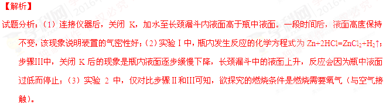
考点：实验原理分析【科学探究】
39．（7分）镁条在空气中久置表面会变黑。某小组同学设计并进行实验，探究镁条变黑的条件。
【查阅资料】常温下，亚硫酸钠（Na2SO3）可与O2发生化合反应。
【猜想与假设】常温下，镁条变黑可能与O2、CO2、水蒸气有关。
【进行实验】通过控制与镁条接触的物质，利用下图装置（镁条长度为3cm，试管容积为20mL），分别进行下列5个实验，并持续观察20天。
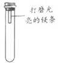
编号 | 主要实验操作 | 实验现象 |
1 | 先充满用NaOH浓溶液洗涤过的空气再加入2mL浓硫酸 | 镁条始终无明显变化 |
2 | 加入2mL NaOH浓溶液 | 镁条始终无明显变化 |
3 | 先加入2mL浓硫酸再通入约4mL CO2 | 镁条始终无明显变化 |
4 | 先加入4mL饱和Na2SO3溶液再充满CO2 | 镁条始终无明显变化 |
5 | 先加入2mL蒸馏水再通入约4mL CO2 | 镁条第3天开始变黑[来至第20天全部变黑 |
【解释与结论】
（1）实验1和2中，NaOH浓溶液的作用是 （用化学方程式表示）。
（2）实验1的目的是 。
（3）实验3中，试管内的气体主要含有CO2、 。
（4）得出“镁条变黑一定与CO2有关”结论，依据的两个实验是 （填编号）。
（5）由上述实验可推知，镁条变黑的条件是 。
【反思与评价】
（6）在猜想与假设时，同学们认为镁条变黑与N2无关，其理由是 。
（7）欲进一步证明镁条表面的黑色物质中含有碳酸盐，所需要的试剂是 。
【答案】（1）NaOH+CO2=Na2CO3+H2O（2）检验只用O2是否会使镁条变黑（3）O2（N2可填写可不填写）（4）2、5（5）H2O、CO2、O2（6）常温下氮气的化学性质不活泼，很难和其他物质反应（7）稀盐酸和澄清石灰水
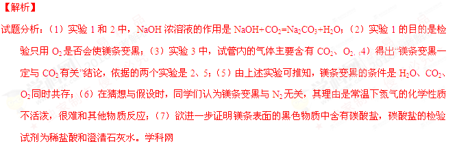
考点：金属锈蚀条件的探究【实际应用定量分析】
40．（3分）为测定21.2g某变质氢氧化钠固体中碳酸钠的含量，将其配置成500mL溶液，分别取出50mL用两种方法进行测定。已知：Na2CO3+BaCl2＝BaCO3↓+2NaCl
| 加入的试剂 | 测得数据 |
方法1 | 足量BaCl2溶液 | BaCO3沉淀1.97g |
方法2 | 足量稀硫酸 | CO2气体0.44g |
请任选1种方法的数据，计算该固体中碳酸钠的质量分数（写出计算过程及结果）。
【答案】50%
【解析】
试题分析：解：①方法一 设50ml溶液中含有碳酸钠x克，由
Na2CO3+BaCl2=BaCO3↓+2NaCl
106 197[来源:学&科&网Z&X&X&K]
xg 1.97g
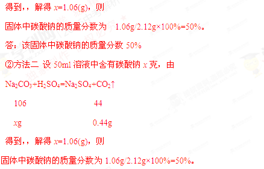
答：该固体中碳酸钠的质量分数50%
考点：根据化学方程式的计算